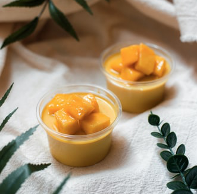

Baked Salmon
Preheat oven to 400 degrees and grease a large baking pan. Arrange salmon fillets on the baking sheet and season generously with salt and pepper. Stir together olive oil, garlic, herbs, and juice of 1/2 lemon. Spoon over salmon fillets being sure to rub all over the tops and sides of the salmon so it has no dry spots. Bake for 15-18 minutes until salmon is opaque and flaky when pulled apart with a fork .Garnish with fresh thyme or parsley if desired and serve.

Healthy Salad
For making this easy healthy salad,you have to mix olive oil,mustard,salt,pepper,honey together and you have to mix them together and whisk.Then take a large salad bowl and mix green veggies,onion,chicken,srimp and bacon together. Add strawberry and blue berries and mix together. Now add the previously made seasoning and mix together.You can add lemon to the salad if desired. You can also garnish the salad with fresh mint for additional flavour.

Mango Pudding
Pour water into a microwave-safe bowl. Sprinkle gelatin over the he top and let it sit for 5 minutes to soften. Transfer water and gelatin to the microwave and heat on high for 1 minute. Whisk in sugar until gelatin and sugar are both fully dissolved. Combine gelatin mixture, mango, vanilla, and coconut milk in a blender and blend until smooth. Place small glasses on a sheet pan. Fill with pudding.Refrigerate until pudding is set.Top with mango cubes or and serve.